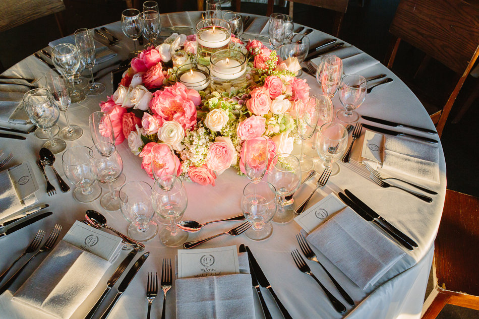

About Us
Established in 2010, with roots dating back to 1959, Sterling Fell Floral Design was founded by Nicholas Sterling, Jason Fell & Alexander Fell. Our floral boutique is conveniently located on the southwest corner of 79th street and York Avenue, in the heart of the Upper East Side of Manhattan.
Sterling Fell is a full service florist that specializes in upscale floral arrangements for homes, offices, building lobbies, and gift orders. Additionally, we offer potted orchids, succulents, topiaries and unique plants.
Providing floral arrangements and custom props for weddings, mitzvahs, galas, and all other special events is one of our specialties. All arrangements are custom made and tailored to our clients’ needs with close attention to detail to compliment our clients’ ambiance and event space.
We also provide urban gardening services to clients that have terraces and private gardens. We have the capacity to provide large containers, large shrubs and trees for building entrances; as well as providing seasonal plant rotations for the tree beds of residential and commercial buildings. Maintenance service is available.
We use the finest seasonal flowers available each day. Most of our flowers are imported from Holland, France, Ecuador, Israel, Japan and New Zealand; striving to provide our clients with the most beautiful flowers the world has to offer.
Delivery available throughout New York City and the greater area. Same day gift orders are accepted. Please call (212) 879-0777 or email info@sterlingfell.com to set up your next order or consultation for any of our other services.
We have curated custom designs for Sotheby's, The Pierre Hotel, The Waldorf Astoria, The Ritz Carlton, The Carlyle, The Gramercy Park Hotel, Tribeca Rooftop, The International Crisis Group, The Ukrainian Institute Of America, The Churchill School & The Cold Spring Country Club to name a few. Allow our Service, Quality and Design to truly make your event spectacular.